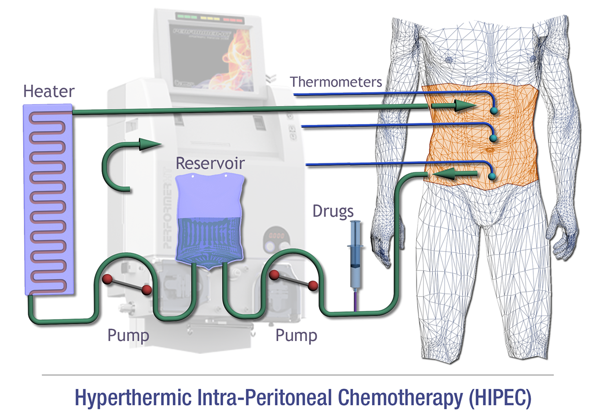
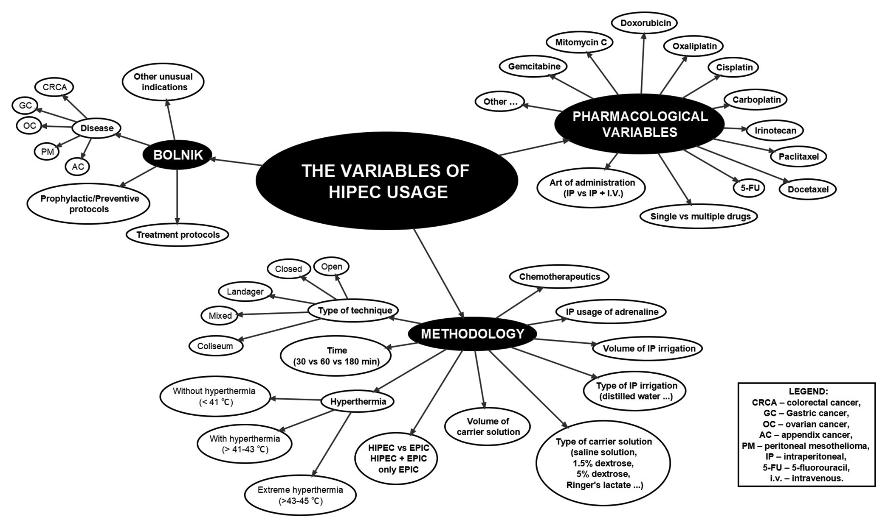
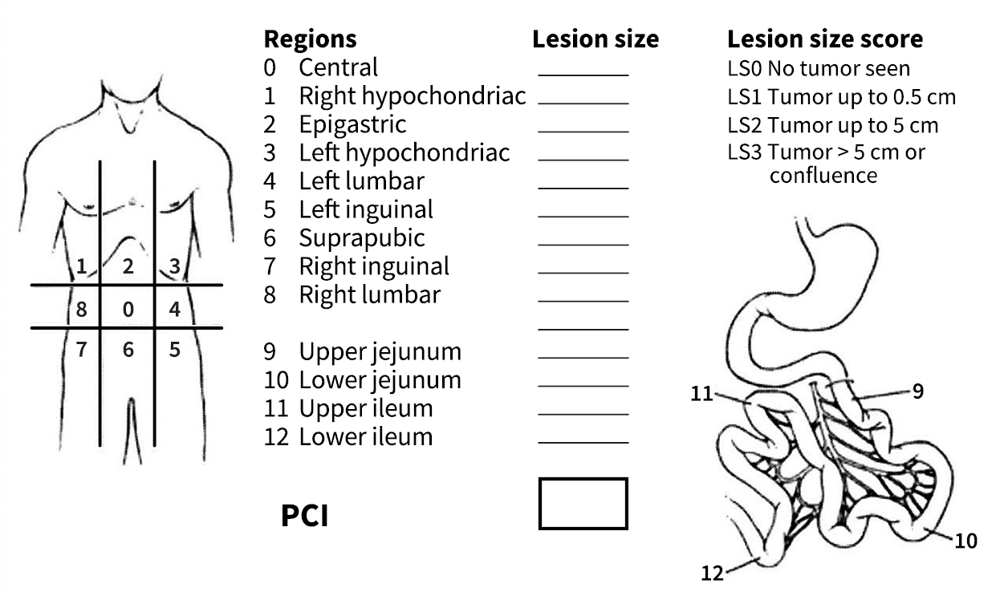

Hyperthermic intraperitoneal chemotherapy
Abstract
In the past, patients with peritoneal metastases have been treated only with palliative therapy. Their state was deemed to be incurable. The median survival time was approximately two months. The therapeutic approach started to change in the nineties. Some researchers were of the opinion that peritoneal metastases were, in certain cases, only a locoregional disease and consequently, the patient could not only be treated, but cured. One of the main supporters of this theory and new treatment approach was Paul Sugarbaker. The proposed treatment consisted of cytoreductive surgery in combination with intraperitoneal chemotherapy. The purpose of the surgical procedure is macroscopic elimination of the tumour and removal of its microscopic remains via intraperitoneal chemotherapy. The procedure in which we apply a heated chemotherapeutic agent is known as hyperthermic intraperitoneal chemotherapy. Heat on its own has some direct anti-tumour effects. It causes protein denaturation, lysosomal activation and increased apoptotic cell death. If the chemotherapeutic agent is heated, complex chemical reactions take place, which promote its effectiveness and increase the depth of penetration. The best results achieved by this method have been reported in colorectal carcinoma, appendiceal malignancies, ovarian carcinoma and peritoneal mesothelioma. In the paper, the authors present this complex procedure, indications, criteria of patient selection and contemporary knowledge on the effectiveness of this method of treatment for certain types of cancer.
1 Introduction
Peritoneal carcinomatosis (PC) is intraperitoneal dissemination of a malignant tumour (1). It can be due to a primary peritoneal malignoma (e.g. peritoneal mesothelioma), dissemination of gastrointestinal cancers (appendiceal, colorectal or gastric cancer), pseudomixoma of the peritoneum and gynaecological cancers (ovarian cancer) (2,3). In the past, peritoneal metastases were deemed to be the incurable and terminal stage of cancer, and accordingly, patients received only palliative therapy (3). With such an approach, the average survival of patients was only two months (4). In the 1990’s, the therapeutic approach started to change considerably (5). Namely, some researchers believed that in certain cases peritoneal metastases are but a type of locoregional diseases, and thus the patient has a fair chance of being cured (6). One of the main proponents of this theory and new treatment approach was Paul Sugarbaker (7).
Thus, cytoreductive surgery (CRS) in combination with intraperitoneal chemotherapy (IPCT) has become part of cancer treatment. The purpose of CRS is to eliminate the macroscopic tumour. To this purpose, surgical peritonectomy with visceral resection has come into use for the removal or peritoneal metastases. The next significant step in the treatment of these diseases has been the locoregional chemotherapy, which is used during surgery or in the early postoperative period (4). The procedure in which a cytotoxic drug is heated and administered during surgery is called hyperthermic intraperitoneal chemotherapy (HIPEC). Chemotherapy (CT) that is used in the early postoperative period is called EPIC. Both are intended to remove any microscopic residual disease (8).
The special feature of the combined treatment with CRS and HIPEC is in that the whole therapy is performed during or along with the surgery (8,9). The usefulness of this therapeutic approach is based on the pathophysiological mechanism of the disease and the hypothesised tumour cell entrapment (8). According to this hypothesis, at the time of surgery, cancerous cells are still released from severed lymph vessels or from venous blood left after surgery. Furthermore, it is known that cancer dissemination may take form of low-density seeding and results in a peritoneal metastasis or a nodular implant at a distance from the primary cancer site. Another form of dissemination is high-density seeding where several cancer cells are entrapped on the surface of the resection site. This creates a layer of cancerous tissue that adapts to the adjoining anatomical structures (8). The basic eligibility criteria for surgery are 1) the absence of systemic or hepatic metastases (with the exception of up to 3 well-delineated focal lesions), and 2) exclusively locoregional progression of the disease in the peritoneum or peritoneal surfaces (10).
A multidisciplinary approach is required in patients with peritoneal cancer. The best results obtained by such treatment approach have been reported in peritoneal pseudomixoma, colorectal cancer (CRCA), appendiceal cancer, ovarian cancer and in peritoneal mesothelioma (7,11,12). However, peritoneal metastases may also occur in histological subtypes of tumours that are typically not associated with metastatic spread in the peritoneal cavity. Among these are breast cancer, malignant melanoma, neuroendocrine tumours (NET) and sarcomas (13-15). Recently, several studies have been published that reported the effective use of CRS in peritoneal metastases of NET and sarcoma (16,17). The use of IPCT in NET, gastrointestinal stromal tumours (GIST) and sarcomas did not prove to be effective as it failed to result in a significant prolongation of survival (4). Guidelines for using CRS with or without IPCT in pancreatic cancer, primary hepatic cancer, breast cancer and malignant melanoma are not yet available (4).
In their article, the authors present some historical facts regarding HIPEC, treatment procedures used in this challenging method, and current reports on the encouraging results achieved in individual cancer types.
2 History
In 1955, Weissberger was the first to present the concept of IPCT for the treatment of localised peritoneal tumours (18). The concept was then adopted and spread in the U.S.A., and in the 1980’s new treatment modalities were introduced for the treatment of patients with peritoneal metastases. In 1979, Dedrick developed an experimental model for IPCT pharmacokinetics, and in 1988, Fujimoto described the use of hyperthermia to enhance the potential of antitumour agents. Combined use of CRS and IPCT as an aggressive locoregional therapy was first reported by Dr Paul Sugarbaker in the 1990’s (3). The use of this approach indicated the possibility of a more effective treatment resulting in a potentially longer survival. Despite certain scepticism and contradictory views, this approach proved to be the only one that prolonged the average survival of selective patients for even up to 46 months (4).
3 Hyperthermic intraperitoneal chemotherapy
CRS and HIPEC have not been found effective as separate methods, but their combination is currently considered the most effective treatment in patients with peritoneal metastases from colorectal cancer, peritoneal mesothelioma, appendiceal carcinoma and ovarian cancer (19,20). Figure 1 shows the use of HIPEC.

Author: Corrado Bellini. The figure is from the web and marked as »reusable by changing«.
In the first step, all the macroscopically visible tumour tissue is removed by CRS, and afterwards HIPEC is used in order to eliminate any minimal residual disease. The researchers have found several factors that influence the outcome and success of treatment, and some of the key findings are summarised in Table 1 (21,22). To achieve a long term improvement and minimise the possibility of recurrence, it is crucial to remove all the macroscopically visible tumour masses, i.e. to achieve complete cytoreduction. Depending on the extent of the disease, various surgical approaches are used, such as peritonectomy of the upper left and right abdominal quadrants and the pelvis, omentectomy, resection of the rectosigmoid segment of the colon, right hemicolectomy, splenectomy and partial gastrectomy (23).
|
Variables |
||
|
Eligible for procedure |
Relative contraindications |
Absolute contraindications |
|
Good general status. |
A sub occlusive syndrome due to more than one stenosis of the GIT. |
Poor general status. |
|
Age below 65–70 years. |
Peritoneal disease progressing under systemic chemotherapy. |
The presence of extra peritoneal metastases (except 3 liver metastases easily resectable). |
|
Lack of extra-abdominal metastases. |
Presence of more than 3 resectable liver metastases. |
Huge and diffuse peritoneal metastases. |
|
No occlusive disorders and no bulky clinical or radiological peritoneal metastases. |
||
|
Sugarbaker’s completeness of CRS |
||
|
Grade |
Definition |
|
|
CC-0 |
No visible peritoneal carcinomatosis after CRS |
|
|
CC-1 |
Nodules persisting < 2.5 mm after CRS |
|
|
CC-2 |
Nodules persisting between 2.5 mm and 2.5 cm |
|
|
CC-3 |
Nodules persisting > 2.5 cm |
|
|
STATUS ECOG |
||
|
Grade |
Definition |
|
|
0 |
Fully active, able to carry on all pre-disease performance without restriction. |
|
|
1 |
Restricted in physically strenuous activity but ambulatory and able to carry out work of a light or sedentary nature, e.g., light house work, office work. |
|
|
2 |
Ambulatory and capable of all selfcare but unable to carry out any work activities. Up and about more than 50 % of waking hours. |
|
|
3 |
Capable of only limited selfcare, confined to bed or chair more than 50 % of waking hours. |
|
|
4 |
Completely disabled. Cannot carry on any selfcare. Totally confined to bed or chair. |
|
|
5 |
Dead. |
|
Summarized after (8,28,59).
Legend: GIT – gastrointestinal tract, SCT – systemic chemotherapy, CRS – cytoreductive surgery.
HIPEC, the next step in the treatment, is generally performed before bowel reconstruction and before abdominal cavity closure in order to prevent the risk of tumour cell entrapment in the sutures at the site of anastomoses. In this procedure, a cytostatic solution heated to 41–44 °C (depending on the type of cytostatic agent) is inserted into the peritoneal cavity via inlet catheters. Then, using drainage catheters, the solution is drained from the peritoneal cavity into a hyperthermal pump, which maintains the temperature of the solution and allows its circulation. While the cytostatic’s concentration in the peritoneal cavity is 7-fold higher than with (standard) intraperitoneal or intravenous application, its tissue penetration is limited to only a few millimetres. The choice of cytostatic type, the dosage and the temperature of the solution depend on the tumour type. The most frequently used are doxorubicin, cisplatin, mitomycin C, melphalan, oxaliplatin, ifosfamide and gemcitabine (24) (Table 2). Hyperthermia alone already has an antitumour effect by causing protein degradation, lysosome activation and apoptosis. Heating a cytostatic solution triggers complex chemical reactions that further increase the effectiveness and the depth of cytostatic penetration into the tumour tissue (25).
|
Features |
Open approach |
Closed approach |
|
Efficiency |
Allows continued cytoreduction of bowel and mesenteric surfaces. |
No surgery possible during chemotherapy. |
|
Environmental hazard |
No aerosols detected. |
Perception of increased safety. |
|
Distribution |
Uniform distribution of heat and chemotherapy solutions, tissues close to skin edge not immersed. |
Possible poor distribution to dependent sites and closed spaces. |
|
Pressure |
No increased intraabdominal pressure. |
Increased intraabdominal pressure may increase chemotherapy penetration into tissue. |
|
Pharmacology |
Allows pharmacokinetic monitoring of tumor and normal tissue |
Tissue uptake of chemotherapy cannot be determined. |
|
Abdominal incision and suture lines |
Treated prior to performing the suturing. |
Risk of recurrence in abdominal incision and suture lines. |
|
Diaphragm perforation with peritonectomy |
Pleural space treated by hyperthermic chemotherapy may prevent seeding of pleural space |
Diaphragm closed prior to hyperthermic intraperitoneal chemotherapy so pleural space is not treated |
|
Intestinal perforation |
Detected by observing immersed bowel loops. |
Not detected. |
|
Hyperthermia |
Increased heat necessary to maintain 42 °C. |
Less heat required to maintain 42 °C. |
Summarized after Sugarbaker and Van der Speeten (8).
This procedure can be carried out using either closed or open HIPEC technique (Table 3). In the open technique, the abdominal cavity is still open or covered with a plastic foil, and therefore there is a problem of cytostatic aerosolization. This problem is supposed to be solved by using anti-evaporation barriers and evaporators. In the closed technique, first the skin cover is sealed with a waterproof seam, and then the peritoneal cavity is perfused via the installed catheters. After the perfusion procedure is completed, the abdominal cavity is reopened, and only after the reconstruction with anastomoses is done, the abdominal cavity is closed permanently (26). Laparoscopic HIPEC technique for palliative indication (considerably reduced ascites) is used mainly in patients with cancer that cannot be treated surgically. The duration of HIPEC treatment depends on the type of cytostatic agent, and may range from 30 min (oxaliplatin) to 3 hrs (pegylated liposomal doxorubicin) (24). The choice of chemotherapeutic agent is crucial for treatment success. The cytostatic agent should neither cause local toxicity, and nor be dependent on metabolism (conversion into the active form). In addition, it must have a direct cytotoxic effect and pharmacokinetic advantages with i.p. administration (limited systemic toxicity and good locoregional penetration). It is also advantageous if the agent has a synergistic effect with heat. The advantage of this type of treatment is in its maximal local and minimal systemic effects, but the drawback is the technical complexity of the procedure which is associated with several risks. Figure 2 shows some variables that should be taken into account before deciding to use the method of treatment in question (8,27).
|
Drug |
Molecular weight |
Type |
AUC ratio |
T1/2 (min) |
T80 % (min) |
Dose |
Carrier solution |
Incompatibility in solution |
Heat synergya |
Heat stability |
Depth of penetration |
|
5-fluorouracil |
130.08 |
Anti-metabolite |
280 |
30 |
75 |
650 mg/m2 (× 5 days) |
0.9 % NaCl; 1.5 % dexstrose dialysis solution; Icodextrin |
Doxorubicin, Daunorubicin, Idaurubicin, Cisplatin, Diazepam, Icytarabine |
MIN |
43 °C |
0.2 mm |
|
Cisplatin |
300.1 |
Alkylator |
10 |
30 |
90 |
90 mg/m2 |
0.9 % NaCl |
NA |
YES |
41.5 °C |
1–3 mm |
|
Docetaxel |
861.9 |
Antimitotic |
552 |
NA |
NA |
45 mg/m2 |
0.9 % NaCl |
Plastic containers and tubes |
NO |
NA |
NA |
|
Doxorubicin |
579.99 |
Antitumour antibiotic |
230 |
20 |
80 |
15 mg/m2 |
1.5 % dextrose dialysis solution |
Heparin, fluorouracil |
YES |
42 °C |
4–6 cell layers |
|
DOXIL (liposomal doxorubicin) |
579.99 |
Antitumour antibiotic |
1.040 |
180 |
NA |
100 mg/m2 |
1.5 % dextrose dialysis solution |
Heparin, fluorouracil |
YES |
42 °C |
4–6 cell layers |
|
Etoposide |
588.58 |
Antitumour antibiotic |
65 |
NA |
NA |
25–350 mg/m2 |
5 % dextrose |
Plastic containers and tubes; acryl; antibiotics |
YES |
42 °C |
NA |
|
Floxuridine (FUDR) |
246.2 |
Anti-metabolite |
75 |
NA |
NA |
500 mg/m2/2x day (× 3 days) |
0.9 % NaCl |
NA |
MIN |
43 °C |
NA |
|
Gemcitabine |
299.5 |
Pyrimidine antagonist |
205 |
40 |
75 |
1,000 mg/m2 |
0.9 % NaCl |
NA |
In 48 h |
42.5 °C |
NA |
|
Irinotecan |
677.19 |
Antitumour antibiotic |
NA |
NA |
NA |
200 mg/m2 |
1.5 % dextrose dialysis solution |
NA |
NO |
44 °C |
NA |
|
Carboplatin |
371.25 |
Alkylator |
10 |
NA |
NA |
300 mg/m2 |
0.9 % NaCl |
NA |
YES |
41.5 °C |
0.5 mm |
|
Melphalan |
305.2 |
Alkylator |
56 |
33 |
69 |
70 mg/m2 |
0.9 % NaCl |
NA |
MAXIMAL |
42 °C |
NA |
|
Mitoxantrone |
517.41 |
Antitumour antibiotic |
115–255 |
NA |
NA |
28 mg/m2 |
0.9 % NaCl; Ringer’s lactate |
Heparin |
YES |
43 °C |
5–6 cell layers |
|
Mitomycin C |
334.3 |
Antitumour antibiotic |
27 |
40 |
90 |
15 mg/m2 |
1.5 % dextrose dialysis solution |
Bleomycin |
YES |
42.5 °C |
2,000 µm |
|
Oxaliplatin |
397.3 |
Alkylator |
16 |
40 |
60 |
460 mg/m2 |
5 % dextrose |
Aluminum alkaline or NaCl solutions |
YES |
46 °C |
1–2 mm |
|
Paklitaxel |
853.9 |
Antimitotic |
1,000 |
NA |
NA |
120–180 mg (total dose) |
1.5 % dextrose dialysis solution; 6 % ethoxylated amylopectin |
Plastic containers and tubes |
NO |
42.5 °C |
>80 cell layers |
|
Pemetrexed |
471.4 |
Multitargeted antifolate |
70 |
90 |
260 |
500 mg/m2 |
1.5 % dextrose dialysis solution |
NA |
NA |
NA |
NA |
Summarized after Sugarbaker and Van der Speeten (8).

Summarized after Sugarbaker and Van der Speeten (8).
3.1 Variables
Recognised cancer centres with a sufficient volume of patients with peritoneal carcinomatosis (PC) have published 8 clinical and radiological factors that are deemed to be associated with a greater probability of a complete CRS:
•»Eastern Cooperative Oncology Group« (ECOG) »performance status» 1 or less;
•no evidence of spread outside the abdominal cavity;
•up to three small, resectable parenchymal liver metastases;
•no evidence of bile duct obstruction;
•no evidence of ureteral obstruction;
•no evidence of gastrointestinal (GIT) obstruction at more than one site;
•patency of the small bowel;
•no macroscopic evidence of disease in the mesentery with several obstructions;
•small volume disease in the gastrohepatic ligament (28).
Some factors are absolute while others are relative contraindications (Table 1) (28). The patient inclusion criteria vary slightly with regard to the type of cancer, while using the same quantitative predictive criteria for all patients with peritoneal metastases. These include histopathological findings, peritoneal cancer index – PCI (Figure 3), completeness of cytoreduction score (Table 1), diagnostic imaging (CT), and classification with peritoneal cytology (1,29,30).

Summarized after Cotte et al. (59).
3.1.1 Peritoneal cancer index
Peritoneal cancer index (PCI) is a numerical value that serves as an estimate of the spread of disease in the abdominal and pelvic regions. To calculate the PCI score, it is necessary to evaluate the size of the change (0-3) in the abdominal and pelvic regions (indicated from 0 to 12). The calculation is made at the beginning of surgery. The higher the PCI score, the less effective will be the CRS and HIPEC treatment and thus less probable long-term survival. Therefore, there are recommended PCI scores up to which it is still reasonable to perform this therapeutic procedure (in pseudomixoma there is no upper limit, while in colorectal cancer the score should be ~ 15) (30).
3.1.2 The completeness of cytoreductive surgery
One of the key factors is a complete tumour removal at the time of CRS intervention. The PCI score significantly influences the outcome of treatment. Table 1 shows individual scores. A score of CC-0 or CC-1 is generally required in order to achieve a better treatment outcome and a better quality of life with fewer complications (30).
3.1.3 TNM classification, peritoneal cytology, and clinical features of primary cancer
A careful examination of the peritoneal surfaces at the primary GIT cancer resection, along with timely and high-quality histopathological analysis of the resected tissue may accurately predict the occurrence of peritoneal metastases after surgery. However, in advanced GIT cancers, peritoneal cytology also provides relevant predictive data (31,32). By accurately evaluating this information, the physician may decide to carry out proactive treatment with CRS and HIPEC. It has been demonstrated that in high-risk patients this way may prevent the onset of peritoneal metastases, and patients with already present metastases are treated by second-look approach (30,32).
3.1.4 Pretreatment diagnostic imaging
In selecting patients suitable for CRS and HIPEC, a CT scan of the chest, abdomen and pelvis is essential. The aim of
3.1.5 Learning curve
CRS with HIPEC is a complex procedure. It is interesting to note that, according to the study of Smeeka et al., a surgical oncologist has achieved an appropriate level of competence after 130 performed procedures. The key competence of training is the acquisition of surgical skills. However, patient-oriented therapeutic approaches and the entire team’s experience in managing complications also contribute to a lower mortality rate (34).
4 Malignant ascites
Malignant ascites is the accumulation of fluid in the peritoneal cavity due to advanced forms of cancer. It occurs as a result of lymph ducts’ blockage by tumour cells, increased permeability of blood vessels, hormonal causes and increased metalloproteinases activity. It is often associated with advanced stages of gynaecological, gastrointestinal and breast cancers. Predominant among the gynaecological cancers is ovarian cancer, while in the gastrointestinal tract the most prevalent are colorectal, pancreatic and gastric cancers. A retrospective study of the causes of malignant ascites has shown that it occurs most likely in ovarian cancer (37.7 %). Approximately 10 % of all ascites are malignant, and 20 % of patients with malignant ascites have tumours of unknown origin (35). Malignant ascites is a poor prognostic factor.
4.1 Treatment
Ascites is treated primarily by primary tumour treatment, diuretics, paracentesis, biological agents and HIPEC, the latter being currently the most promising treatment modality. The type of cytostatic used in HIPEC depends on the primary tumour that caused malignant ascites. In ovarian cancer, the most appropriate agent is cisplatin (50 mg/ m2) or doxorubicin (15 mg/m2), in colorectal or gastric cancer it is mitomycin C (12.5 mg/m2), while in patients with other tumour types doxorubicin (12.5 mg/m2) is used. The study by Valle et al., which included 52 patients with malignant ascites, a total disappearance of ascites was reported in 94 %, and the average survival of patients was 98 days (range 21–796 days) (36).
5 Appendiceal cancer
In terms of its pathohistological features, appendiceal cancer can be classified as neuroendocrine or epithelial tumours. The cancer of epithelial origin can further be classified into individual subgroups: mucous hyperplasias, retention cysts, mucinous cystadenomas and adenocarcinomas (mucinous, intestinal, signet-ring cell). Mucinous neoplasms of the appendix are a heterogeneous group of tumours, classified with respect to their grade of malignancy into low- and high-grade histological subtypes. Conditions associated with appendiceal cancer dissemination can be divided into three groups: Disseminated peritoneal adenomucinosis (DPAM), peritoneal mucinous carcinomatosis (PMCA) and well differentiated PMCA (4,37). Another type of (appendiceal) cancer is goblet-cell carcinoma, which is a combination of adenocarcinoma and carcinoid. A special form is peritoneal pseudomyxoma (PMP), which originates from mucinous adenoma (37). It is characterised by a disperse accumulation of gelatinous material in the abdominal cavity and pelvis, and mucinous ingrowths on the peritoneal surface. As PMP grows, mucus begins to accumulate, leading to a burst and dissemination of the disease. Mucus starts to accumulate in the peritoneal cavity, leading to a characteristic “jelly belly” appearance and GIT obstruction. Due to incorrect denomination and simplification, in recent years the term has also been used for peritoneal dissemination of mucinous adenocarcinomas of the appendix, large and small intestine, lung, breast, pancreas, stomach, gallbladder, fallopian tubes and the ovaries. The nature of their dissemination renders PMP and adenocarcinoma most suitable for treatment with HIPEC (4).
The pathohistological findings of metastases from the primary tumour largely influence the outcome of CRS and HIPEC treatment. Metastases containing more than 90 % of mucous, squamous epithelial cells, without atypia and mitoses, were predictive of a favourable outcome despite a high PCI score. Metastases with a high cell atypia, numerous mitoses and less than 50 % of mucous epithelial cells were associated with poor outcome (1). Patients with adenomucinosis have the best prognosis; the survival of patients with mucinous carcinoma is comparable to the survival of patients with peritoneal metastases from colorectal cancer. Although colorectal cancer and cancer of the appendix are similar, there are still significant differences between the two. The most relevant difference is in the diameter of the lumen of the affected organ. Colorectal cancer (CRCA) grows in the lumen and spreads outward through the wall, in its advanced stages spreading all the way to serosis. Because of the appedix’s small lumen, cancer invades the wall sooner and spreads tumour cells further into the abdominal cavity and the pelvic area (1,34).
5.1 Treatment
The pioneer of such treatment approach was Sugarbaker who in 1987 reported on the first use of IPC after CRS in patients with PMP (4). In 2001, he reported on a 10-year follow up of 108 patients treated with CRS and HIPEC with mitomycin. The chemotherapeutic schedule included 5-fluorouracil (5-FU) from postoperative Days 1 to 6, followed by three cycles of adjuvant therapy with mitomycin (i.v.) and IPCT with 5-FU. The group of patients under study was very heterogeneous. In their study, the histology was of outstanding importance for patients survival, since the patients with DPAM had significantly better survival than patients in other groups, who had mucinous and intermediary cancers (38).
A systematic review of patients with histologically verified DPAM who underwent CRS and HIPEC showed 70–86 % five-year survival and 60–68 % ten-year survival (39). In a multicentric study, the authors reported on 81 % 5-year and 70 % 10-year survival for patients with DPAM, 95 % 5-year and 49 % 10-year for patients with PMCA, and 78 % 5-year and 63 % 10-year survival for those with mixed type cancer. The average survival was 16.3 years. It has been proven that complete cytoreduction is the most important factor associated with longer survival (40). With CRS, a routine lymphadenectomy is not recommended (4).
6 Colorectal cancer
Colorectal cancer (CRC) is the third most common cancer in men worldwide (746,000 cases per year) and the second most common in women (614,000 cases per year). In 2012, there were almost 1.4 million new patients detected. The predicted incidence in 2035 will be 2.4 million patients. Incidence rates are higher in the developed (737,000 cases) than in less developed countries (624,000 cases), while mortality is higher in less developed countries (42,43).
The intestinal mucous membrane is covered with the glandular epithelium, and therefore the most common cancer in this region is adenocarcinoma (90–95 %). At the time of diagnosis, more than 60 % of patients present with locally or regionally advanced disease, while 15 % of patients already have distant metastases. CRC spreads by lymphogenous and haematogenous dissemination, most frequently into the liver, lung and bones (43).
Following the liver, the peritoneum is the second most frequent metastatic site of CRC. Studies published in the past claim that the peritoneum is the only metastatic site in up to 25 % of cases. Recent studies report 10 %, whereas there are up to 20 % of patients who have metastases in the peritoneum as well as in some other organ (44). Advanced stage of the disease is associated with poor prognosis of the outcome. The average survival without treatment is up to 9 months (44). Unfortunately, in stage IV, the disease advances in 50 % of patients, despite R0 resection (1). In 10–35 % of these patients the disease recurs in the peritoneum. With modern SCTs, which comprise oxaliplatin and irinotecan with the addition of 5-FU and targeted drugs, such as bevacizumab and cetuximab, the average survival of patients with stage IV of the disease may be extended for more than 15 months (42). The quality of life is often worsened by accompanying ascites and frequent bowel obstruction. At the time of diagnosis, for three quarters of patients with PC (due to CRC) the only option is palliative systemic chemotherapy. The remaining quarter of patients without distant metastases and tumour limited to the peritoneum are eligible for treatment with CRS in combination with HIPEC (31).
6.1 Treatment
In the treatment of CRC surgery plays the central role. Adjuvant therapy, however, differs in both types. The standard treatment of locally or regionally advanced CRC is radiotherapy or radiochemotherapy with 5-FU in a continuous infusion, or with capecitabine prior to surgery. With modern combinations of oxaliplatin and irinotecan with the addition of 5-FU and target substances, such as bevacizumab and cetuximab, the average survival of patients with stage IV of the disease is currently from 7 to more than 24 months (1). In the case that metastases are limited to the peritoneum and provided that the aforementioned conditions are met, treatment with CRS and HIPEC is feasible.
A relative contraindication for CRS and HIPEC is poorly differentiated primary tumour. With inclusion of patients with well and moderately differentiated tumours, the survival is significantly better. Currently, two HIPEC protocols are used in the treatment of these patients. By the first protocol, the treatment is carried out with mitomycin C, heated to 41 °C, for 60–90 minutes, using closed technique. By the second protocol, oxsaliplatin is administered (460 mg/m2 of oxaliplatin in 2 L/ m2 of 5 % isoosmotic dextrose) for 30 minutes (precisely, 30 min. from the moment when the minimum temperature of 42 °C is reached in the abdominal cavity, plus 5–8 min. before the infusion is heated from 38 °C to 42 °C, i.e. to 43 °C (range 42–44 °C), using open technique (11). Two-way systemic and intraperitoneal chemotherapy during surgery, combining intraperitoneal oxsaliplatin and i.v. infusion of 5-FU (400 mg/m2) with leucovorin (20 mg/m2), is primarily used for PC from CRC. Mitomycin has an advantage due to its high molecular weight, good tissue perfusion (up to 5 mm) and a favourable pharmacokinetic profile that allows increased intraperitoneal concentration without causing severe side effects. According to literature reports, the efficacy of both cytostatics in the aforementioned regimen is comparable. Nevertheless, some researchers are in favour of oxaliplatin because it does not cause neutropenia and has a shorter perfusion time (30 min vs. 90 min) as compared to mitomycin-C (11,28).
A randomised study of 105 patients compared two groups of patients who had either CRS + HIPEC + SCT or only SCT performed. Despite the inclusion problems, the study reported a 22-month average survival rate for the first group and 13 months for the second group (45). After 8 years, the survival rate was the same (46). In another study, Association Francaise de Chirurgie reported on a 30 % 5-year survival rate, which was among the lowest reported in the literature (47). The centres that frequently practice such approaches reported on around 40 % 5-year survival rate. Glehen et al. published their results of using HIPEC and EPIC approach in patients with this disease. Their study included 506 patients from 28 institutions; HIPEC (54 %), EPIC (24 %) and combination (22 %). Patients with CCR0 (complete resection) survived 1, 3 and 5 years in 87 %, 47 % and 31 % respectively; their average survival was 32.4 months. The overall survival rate (OS) was 72 %, 39 % and 19 % for 1-, 3- and 5-year intervals, respectively. The median overall survival was 19.2 months (48). In their study, Elias et al. compared HIPEC and EPIC approaches. The study included 523 patients, but possible differences in their survival unfortunately were not reported (47).
Some studies report high mortality and morbidity rates associated with CRS and HIPEC in CRC (7,28,49). In 2014, Sugarbaker presented surgery results in patients with metastases from CRC, in whom the mortality rate was 0.6 % and the occurrence of IV degree side effects was 12 %. He concluded that, for selected patients, the combined CRS and HIPEC treatment was the best therapeutic option (7). He also believed that currently there is no evidence to suggest that patients with CRC limited to the peritoneal surface should be treated exclusively by SCT (7). Further to this conclusion, it should be pointed out that in the same year, Sugarbaker emphasised in another article that advances in the development of systemic drugs resulted in the improvement of patients’ condition, and taking into account the progress in CT (oxaliplatin, irinotecan, biological drugs), CRS and HIPEC need not be necessary the best therapeutic choice, but nevertheless, these methods still have their place in the treatment of selected patients (31). He underlined that in any case the patient should be offered a multidisciplinary approach with a range of different treatment options.
7 Gastric cancer
The outcome of gastric cancer with peritoneal metastases is among the worst ones, with the average survival ranging between 3 to 7 months and a 0 % five-year survival rate (50). Although adjuvant CT, neoadjuvant CT and adjuvant CRT have proven to be useful and provided minimal improvement in patients’ survival, none of these treatment modalities have significantly contributed to reducing the number of recurrences. Patients with gastric cancer (GC) and peritoneal metastases have significantly worse response to chemotherapy. The average survival of patients with SC and PC after treatment is 9.5–12 months. Due to the complexity of treatment and unsatisfactory CT results, interest in HIPEC with CRS has increased (50).
In the past, some disapproved of the procedure due to a high mortality and morbidity rate. According to the available data, the mortality rate for patients with GC is probably around 3.6–6.5 % (18). Compared to ovarian cancer, mortality is slightly higher due to gastrectomy, because less visceral resections on average are done in ovarian cancer. The main postoperative complications include neutropenia, GIT fistulae, pneumonia, haemorrhage, abdominal abscess, sepsis, wound infection and kidney failure (18).
There are three potential possibilities of HIPEC use in the treatment of GC: 1) prophylactic – to prevent recurrence after curative gastrectomy in high-risk patients; 2) therapeutic – in patients with PC after CRS, and 3) palliative – in patients with poorly controlled ascites due to severe PC spread that is not suitable for CRS (18). In a prospective study with more than 1,000 patients with adenocarcinoma of the stomach, who later developed metachronous PC, the average survival despite the primary R0 D2 resection was only 3 months. Although a standard systemic therapy in patients with GC and PC extended this period to 7–10 months, GC’s response to SCT is poor (4). In another study, in selected patients, this period was prolonged using CRS and HIPEC method to an average of 9.2 months, and the five-year survival rate was 13 % (51). In a prospective randomised study, systemic chemotherapy was compared with CRS and HIPEC. The systemic chemotherapy was performed according to FOLIFOXIRI schedule (irinotecan, leucovorin, oxaliplatin and 5-FU), the application regimen being irinotecan 165 mg/m2 for 90 min, followed by leucovorin 200 mg/m2 and oxaliplatin 85 mg/m2 for 2 hrs on Day 1, together with a continuous infusion of 5-FU 3,200 mg/m2 for 48 hrs. After gastrectomy and the removal of liver and lung metastases, the second group of patients underwent CRS and HIPEC (oxaliplatin 460 mg/m2 at 41°C for 30 min). After 8 months, the second group also started receiving CT according to FOLFOXIRI schedule. Patients in the first group had an average survival of 4.3 months, while those in the second group survived 11.3 months (52).
It is interesting to note that they also described the strategy of neoadjuvant IP and SCT (NIPS), CRS and HIPEC, and IP CT (EPIC) after surgery. The basic idea was to reduce the tumour burden preoperatively and at the same time use NIPS as a form of chemotherapy that exerts therapeutic effects on peritoneal disease and subperitoneally in the vascular system, in patients with positive peritoneal cytology. This treatment is followed by CRS and HIPEC. The dosage regimen of NIPS was 60 mg/m2
8 Ovarian cancer
Ovarian cancer is one of the leading causes of death in women with malignant disease. The incidence rate in Slovenia for 2011 is 14.8 per 100.000 population. Ovarian cancer (OC) represents the seventh most frequent cancer in women. According to the data for 2012, 239 women are diagnosed with OC annually, most of them at an age between 55 and 65 years. The most frequent OC type is malignant epithelial tumour of serous adenocarcinoma subtype (40–45 %), followed by endometroid subtype. Generally it is diagnosed in FIGO III and IV stage, when there are peritoneal metastases already present in 75 % of cases. The standard treatment is CRS and a systemic chemotherapy, which, however, cannot prevent recurrence of the disease in 75 % of patients (54). Recurrent ovarian cancer is the term that applies to a recurrence of the disease after completed therapy; platinum-resistant OC appears within 6 months, while the recurrence of platinum-sensitive type takes longer than 6 months.
8.1 Treatment
In these patients, CRS and HIPEC proved to be an effective treatment method. The optimum regimen of treatment has not yet been defined. Cisplatin, oxaliplatin, mitomycin and doxorubicin were used in various studies. In one of the studies, the protocol with cisplatin 70 mg/m2 and 1-hour duration of HIPEC at 42 °C was confirmed as most appropriate (28). Recently, the first randomised study that investigated HIPEC for the treatment of ovarian cancer was published. The clinical study included 120 patients with recurrent disease, who were initially treated by CRS and systemic chemotherapy. Those patients who were treated with HIPEC in addition to CRS and systemic chemotherapy had a significantly better median survival than others (26.7 months vs. 13.4 months, p < 0.006). The survival was better in patients with platinum-sensitive as well as in those with platinum-resistant ovarian cancer (55).
9 Mesothelioma
The term mesothelioma covers a group of malignant tumours that arise from serous membranes (pleura, peritoneum, pericardium, tunica vaginalis testis). Diffuse malignant peritoneal mesothelioma (DMPM) is a locally aggressive primary malignant tumour of the serous peritoneal surface. It represents 7–10 % of all diagnosed mesotheliomas.
9.1 Treatment
Patients, treated by palliative surgery either with or without chemotherapy survived on average one year. Advances in the area of treatment have led to the combination of CRS and HIPEC, which is currently considered to be the most appropriate therapy. In a study comparing cisplatin and carboplatin for the implementation of HIPEC, a longer average survival was observed in patients treated with carboplatin (56). In the study that included 240 patients with DMPM treated with a combination of CRS and HIPEC, the median survival was 53 months, while 3-year survival rate was 60 % and 5-year survival rate 47 % (57).
Deraco proposed a new system of staging for patients with DMPM, based exclusively on the determination of PCI: Stage I (up to 10), stage II (11-20), stage III (21-30) and stage IV (> 30). Patients with stage III or IV are not eligible for CRS with HIPEC. Five-year survival for stages I, II and III is 87 %, 53 % and 29 %, respectively (58).
10 Conclusion
The combination of CRS and HIPEC is one of the most effective options for the treatment of peritoneal metastases originating from different tumours. In the article we presented individual approaches to certain types of cancer. The most important prognostic factors for the success of this treatment approach are cancer type, stage of the disease, and the possibility of complete cytoreduction. Since this is a high-risk procedure, the appropriate selection of patients is also of key importance. It is recommended that this type of treatment be carried out in centres with properly trained and experienced staff.
Several research studies are needed in this area of oncology, before recommendations for the treatment of individual tumour types, the choice of the most effective drugs and the regimen of its application in HIPEC would be finally adopted. But even at present time, it can already be concluded that in several multinational studies, CRS and HIPEC treatment has been shown to increase the survival of selected patients, while their perioperative or immediate postoperative mortality is comparable with mortality rates in other major surgical procedures in the abdominal cavity.